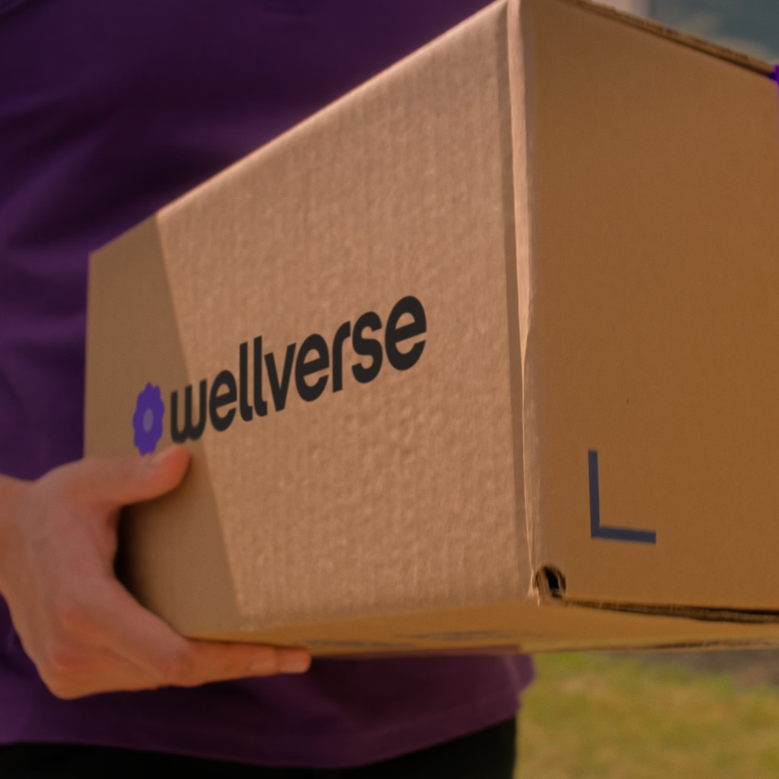
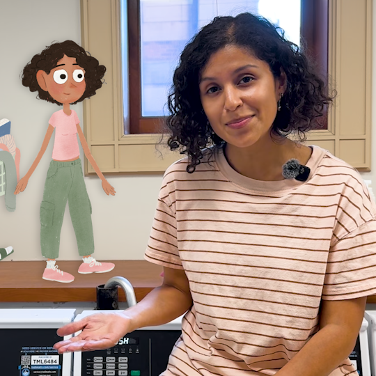
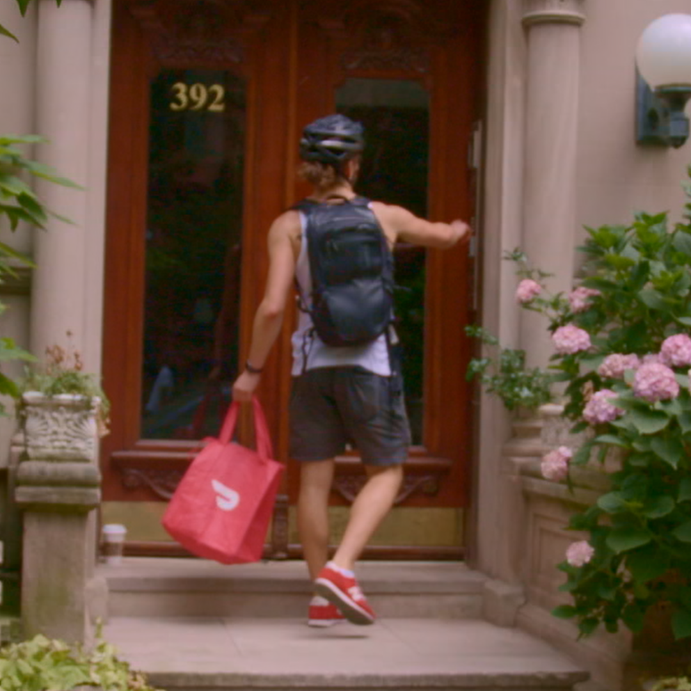
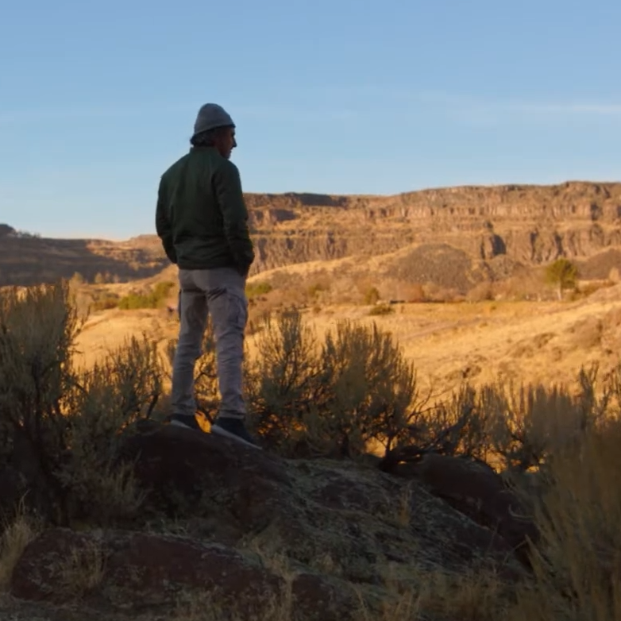
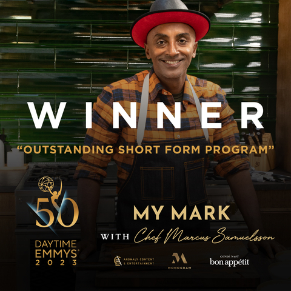

WellVerse Brand Anthem
Brand video · Editor · 2026
selected work
Intentional edits that bring a brand’s ideals into focus.


Brand video · Editor · 2026

Promo · Editor · Seed&Spark · 2026
View project
Branded video · Editor · 2022

Branded video · Assistant Editor · 2019–20
View project
Digital spot · Junior Editor · Monogram / Bon Appétit · 2022
View project